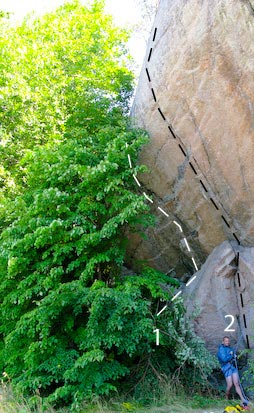
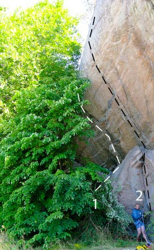

Bilprovningen
Lat: 56.1799131099773
Long: 14.844846725463867
<div style="float: right; margin-left: 10px; padding: 3px; border: solid 1px #cccccc;">
<googlemap width=400 height=350 lat="56.1799131099773" lon="14.844846725463867" zoom="11" type="map" controls="small">
56.1799131099773,14.844846725463867,Bilprovningen
</googlemap>
</div>
[[Bild:Gelin Karelin-1.jpg|400 px|thumb|Bekväm "roadside" cragging. Micke Blixt hänger loss på
Gelin Karelin
7c
Foto:
Fredrik Rapp
]]
Allmänt
En liten men grymt överhängande klippa som ligger minst sagt urbant i Karlshamns industriområde. Endast några få leder finns gjorda, men Gelin Karelin är att betrakta som en av de mest klassiska hårda turerna i Skåne/Blekinge-regionen. Anmarschen är väldigt kort då man i princip kan säkra genom takluckan på bilen! Alla sportleder har ankare.
Hitta hit
Väster ifrån: Kör E22an mot Kalmar. Ta av från E22 vid Karlshamn västra (Exit no 51). Ta höger vid avfartens slut. Kör söderut på väg 29 i ca. 1,7 km och ta vänster i nästa rondell in på Vekerumsvägen. Fortsätt 800 meter och ta sen vänster in på Gröna vägen. Fortsätt 60 meter till. Can´t miss it! Dessutom är det även skyltat mot bilprovningen. Dock inte hela vägen från E22an.
Lederna
- 1
- Halvnelson
- 7+/8-
- Brant boulder start som följs av en lättare spricka. Hyfsat säkrad, men akta hyllan. Ganska kort. Slutar vid tallen på den stora bilden. <br>Tidigare brant aidlinje A1+, Ola Modéer -08.
- 2
- Hög standard
- A3
- Fin och brant aidklättring som övergår till en tunn copperheadsöm på sva mot slutet. Någon rivet finns där denna tunnar ut helt.
- 3
- Gelin Karelin
- 7c
- Kanonhäftig och mycket brant sportklättring längs den överhängande sprickan. Ett måste för den hängivne och sydsvenske sportklättraren! Ankare. Etablerades av Mark Jansson i början på 90-talet, men den förste som klarade en bestigning var Patrik Gelin. Går även att klättra på egna säkringar...
- 4
- Japp
- 8a+
- Stabil centrallinje som anses mycket fin. Ankare.
-
- Japp/Gelin Karelin
- 7c+
- Variant om man inte har något annat att göra - Första halvan på Japp och sedan in i Gelin Karelin
- 5
- Shrek
- 8b
- Skåne/Blekinges hårdaste led! Linjen forcerar klippans mest kompakta yta, utan att erbjuda allt för mycket respit.. Ankare.
- 6
- Dubbelt upp
- 8a
- Fin linje som är knepigare än den ser ut. Ankare.
-
- Hål in one
- 7c
- Starta de två första bultarna som Dubbelt upp sedan snett vänster och upp.
- 7
- Biltema
- 7c
- Kort linje långt till höger. Ankare.
- 8
- Släng dig i väggen
- 7c
- Kort linje längst till höger. Ankare.
Kategori:Blekinge
 
